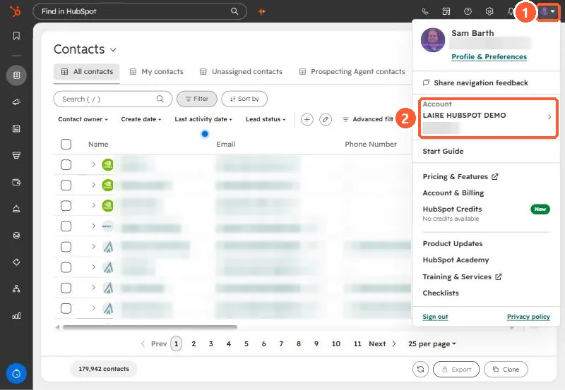

Short answer
Click your avatar in the top right of HubSpot. Under Account, the number below your account name is your portal ID. HubSpot also calls it the Hub ID or account ID. It is the same number you see in every HubSpot URL, right after the tool name.
In the account menu
Click your avatar or account name in the top right corner of HubSpot (1). The menu shows your user details first, then an Account section with the account name and, right under it, the portal ID (2).


If you belong to several portals, the arrow next to the account name lets you switch, and each one shows its own ID.
In any HubSpot URL
Every page in HubSpot has the portal ID in its address, right after the name of the tool:
https://app.hubspot.com/contacts/12345678/objects/0-1/views/all/list
https://app-eu1.hubspot.com/workflows/12345678
https://app-na2.hubspot.com/settings/12345678/usersThe start of the address changes with the data center your account is hosted in (app, app-na2, app-eu1), but the ID sits in the same place.
What you need it for
- Support tickets and partners. It is the fastest way to tell someone exactly which account you mean, especially if your company has a production portal and a sandbox with the same name.
- Single sign-on. HubSpot's SSO setup asks for it in the identity provider's Portal Id field.
- Direct links. Paste the ID (or any HubSpot URL) into the HubSpot link builder to get links straight to workflows, properties, imports, and settings in your portal. Every article on this site has the same box at the top.
No. The portal ID shows up in your tracking code and page URLs. It identifies the account but does not grant access to it. Keys and private app tokens are what you keep private.